Changes in PRIMAP-hist v2.5.1_final compared to v2.5_final for Papua New Guinea
2024-02-29
Johannes Gütschow
Change analysis for Papua New Guinea for PRIMAP-hist v2.5.1_final compared to v2.5_final
Overview over emissions by sector and gas
The following figures show the aggregate national total emissions excluding LULUCF AR6GWP100 for the country reported priority scenario. The dotted linesshow the v2.5_final data.
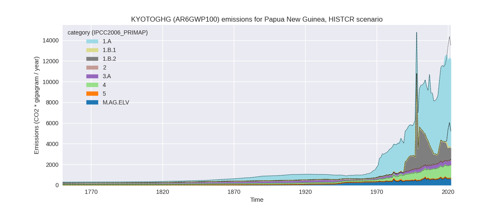
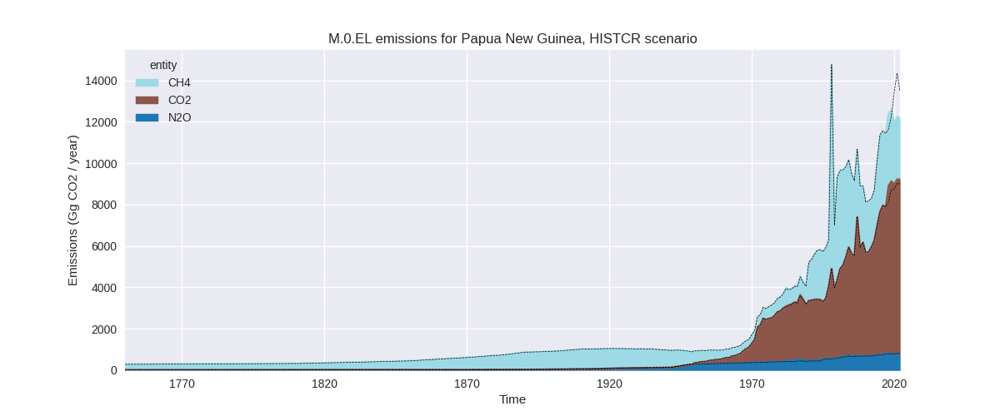
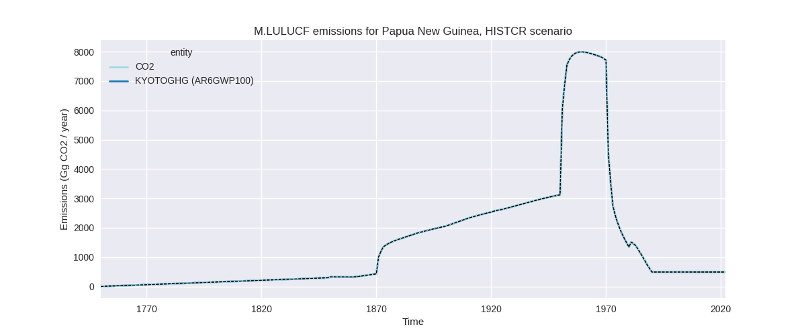
The following figures show the aggregate national total emissions excluding LULUCF AR6GWP100 for the third party priority scenario. The dotted linesshow the v2.5_final data.
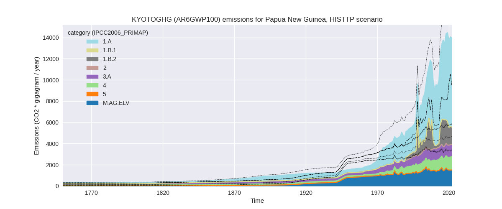
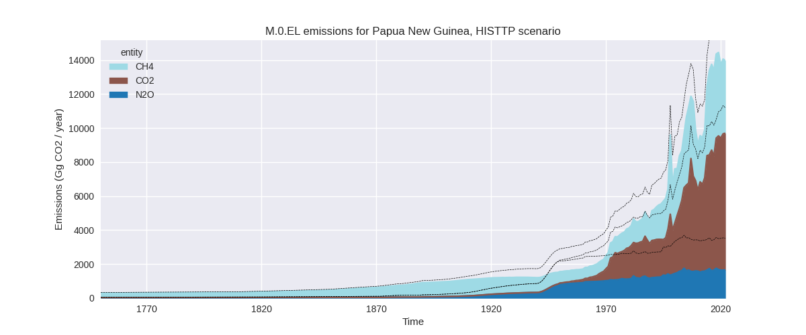

Overview over changes
In the country reported priority scenario we have the following changes for aggregate Kyoto GHG and national total emissions excluding LULUCF (M.0.EL):
- Emissions in 2022 have changed by -9.7%% (-1306.32 Gg CO2 / year)
- Emissions in 1990-2022 have changed by -1.5%% (-140.02 Gg CO2 / year)
In the third party priority scenario we have the following changes for aggregate Kyoto GHG and national total emissions excluding LULUCF (M.0.EL):
- Emissions in 2022 have changed by -20.6%% (-3623.99 Gg CO2 / year)
- Emissions in 1990-2022 have changed by -16.9%% (-1968.04 Gg CO2 / year)
Most important changes per scenario and time frame
In the country reported priority scenario the following sector-gas combinations have the highest absolute impact on national total KyotoGHG (AR6GWP100) emissions in 2022 (top 5):
- 1: 1.B.2, CH4 with -1481.21 Gg CO2 / year (-56.3%)
- 2: 1.A, CO2 with 270.66 Gg CO2 / year (3.3%)
- 3: 1.B.2, CO2 with 40.27 Gg CO2 / year (121.8%)
- 4: 2, CO2 with -38.83 Gg CO2 / year (-62.3%)
- 5: M.AG.ELV, CH4 with -37.18 Gg CO2 / year (-46.3%)
In the country reported priority scenario the following sector-gas combinations have the highest absolute impact on national total KyotoGHG (AR6GWP100) emissions in 1990-2022 (top 5):
- 1: 1.B.2, CH4 with -171.35 Gg CO2 / year (-8.2%)
- 2: 1.A, CO2 with 60.90 Gg CO2 / year (1.2%)
- 3: 2, CO2 with -30.62 Gg CO2 / year (-57.8%)
- 4: M.AG.ELV, N2O with 5.31 Gg CO2 / year (1.2%)
- 5: 1.A, N2O with -3.25 Gg CO2 / year (-2.8%)
In the third party priority scenario the following sector-gas combinations have the highest absolute impact on national total KyotoGHG (AR6GWP100) emissions in 2022 (top 5):
- 1: 1.B.2, CH4 with -2141.44 Gg CO2 / year (-59.9%)
- 2: M.AG.ELV, N2O with -1858.05 Gg CO2 / year (-57.2%)
- 3: 1.A, CO2 with 275.14 Gg CO2 / year (3.6%)
- 4: 1.B.2, CO2 with 138.08 Gg CO2 / year (411.9%)
- 5: 1.A, CH4 with 50.75 Gg CO2 / year (11.9%)
In the third party priority scenario the following sector-gas combinations have the highest absolute impact on national total KyotoGHG (AR6GWP100) emissions in 1990-2022 (top 5):
- 1: M.AG.ELV, N2O with -1781.09 Gg CO2 / year (-58.0%)
- 2: 1.B.2, CH4 with -245.82 Gg CO2 / year (-18.4%)
- 3: 1.A, CO2 with 72.47 Gg CO2 / year (1.6%)
- 4: 2, CO2 with -30.62 Gg CO2 / year (-57.8%)
- 5: 1.A, CH4 with 15.67 Gg CO2 / year (4.0%)
Notes on data changes
Here we list notes explaining important emissions changes for the country. ’' means that the following text only applies to the TP time series, while means that it only applies to the CR scenario. Otherwise the note applies to both scenarios.
- 1.B.2, CH4: EDGAR 8.0 data are lower than EDGAR 7.0 starting in 2019 leading to lower post-2019 emissions in PRIMAP-hist v2.5.1
- 1.A, CO2: CDIAC 2023 growth rates are a bit higher after 2017 than EI growth rates leading to higher emissions post 2017 in PRIMAP-hist v2.5.1
- M.AG.ELV, N2O: FAO 2023 emissions are much lower than emissions in FAO 2022.
- 2.D, CO2: Emissions in 2.D (non-energy products from fuels and solvent use) are much lower in EDGAR 8.0 than in EDGAR 7.0 and thus emissions in PRIMAP-hist v2.5.1 are lower than in v2.5. As there are no country reported data for 2.D, CO2 the CR time-series are affected as well.
Changes by sector and gas
For each scenario and time frame the changes are displayed for all individual sectors and all individual gases. In the sector plot we use aggregate Kyoto GHGs in AR6GWP100. In the gas plot we usenational total emissions without LULUCF. ## country reported scenario
2022
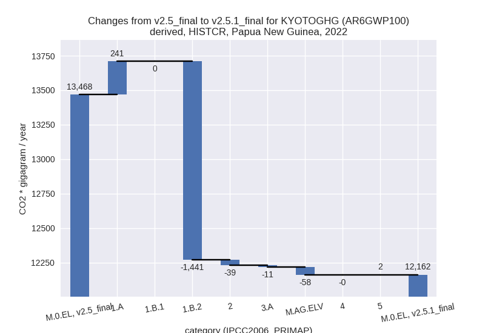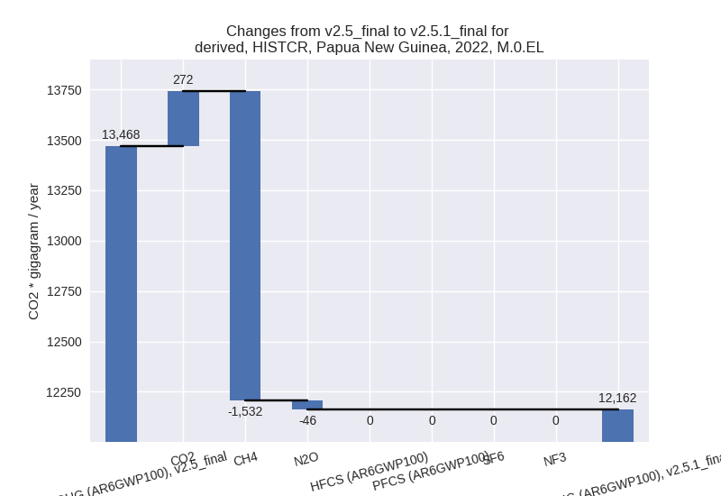
1990-2022
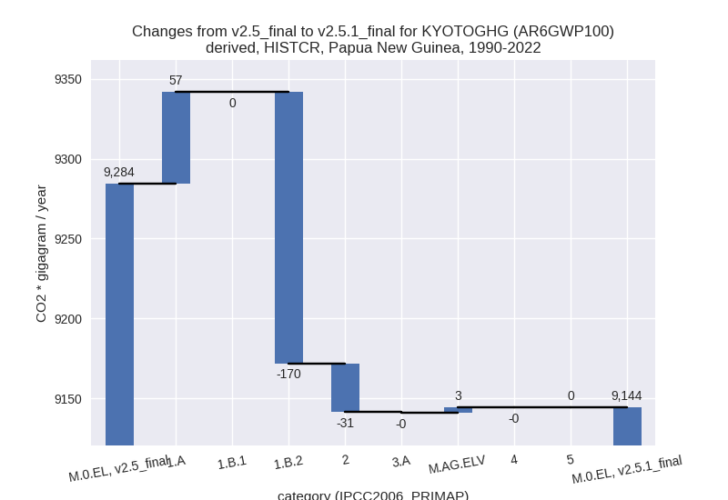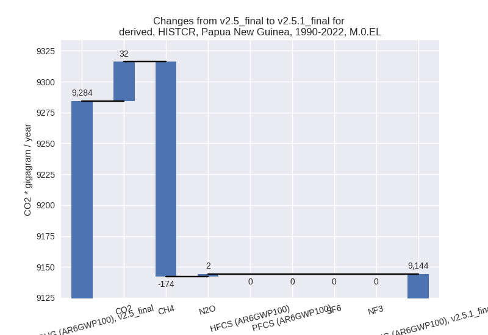
third party scenario
2022
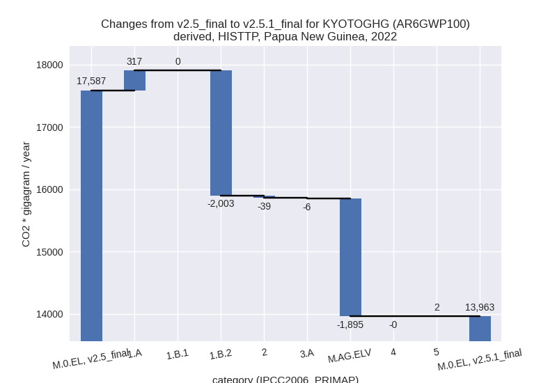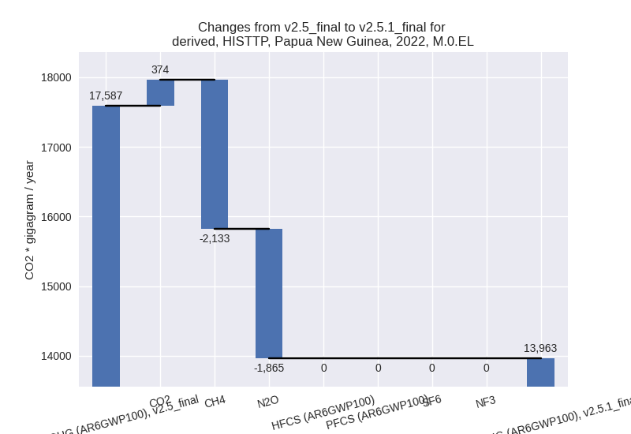
1990-2022
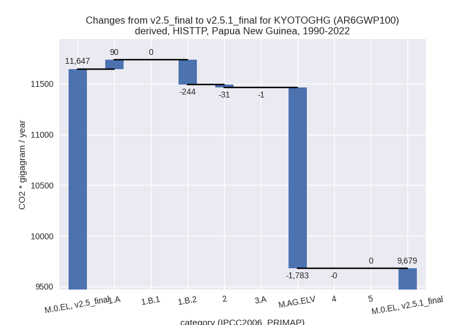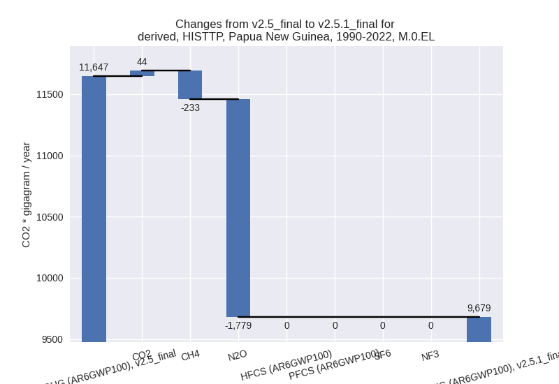
Detailed changes for the scenarios:
country reported scenario (HISTCR):
Most important changes per time frame
For 2022 the following sector-gas combinations have the highest absolute impact on national total KyotoGHG (AR6GWP100) emissions in 2022 (top 5):
- 1: 1.B.2, CH4 with -1481.21 Gg CO2 / year (-56.3%)
- 2: 1.A, CO2 with 270.66 Gg CO2 / year (3.3%)
- 3: 1.B.2, CO2 with 40.27 Gg CO2 / year (121.8%)
- 4: 2, CO2 with -38.83 Gg CO2 / year (-62.3%)
- 5: M.AG.ELV, CH4 with -37.18 Gg CO2 / year (-46.3%)
For 1990-2022 the following sector-gas combinations have the highest absolute impact on national total KyotoGHG (AR6GWP100) emissions in 1990-2022 (top 5):
- 1: 1.B.2, CH4 with -171.35 Gg CO2 / year (-8.2%)
- 2: 1.A, CO2 with 60.90 Gg CO2 / year (1.2%)
- 3: 2, CO2 with -30.62 Gg CO2 / year (-57.8%)
- 4: M.AG.ELV, N2O with 5.31 Gg CO2 / year (1.2%)
- 5: 1.A, N2O with -3.25 Gg CO2 / year (-2.8%)
Changes in the main sectors for aggregate KyotoGHG (AR6GWP100) are
- 1: Total sectoral emissions in 2022 are 9766.16 Gg
CO2 / year which is 80.3% of M.0.EL emissions. 2022 Emissions have
changed by -10.9% (-1199.60 Gg CO2 /
year). 1990-2022 Emissions have changed by -1.5% (-112.26 Gg CO2 / year). For 2022
the changes per gas
are:
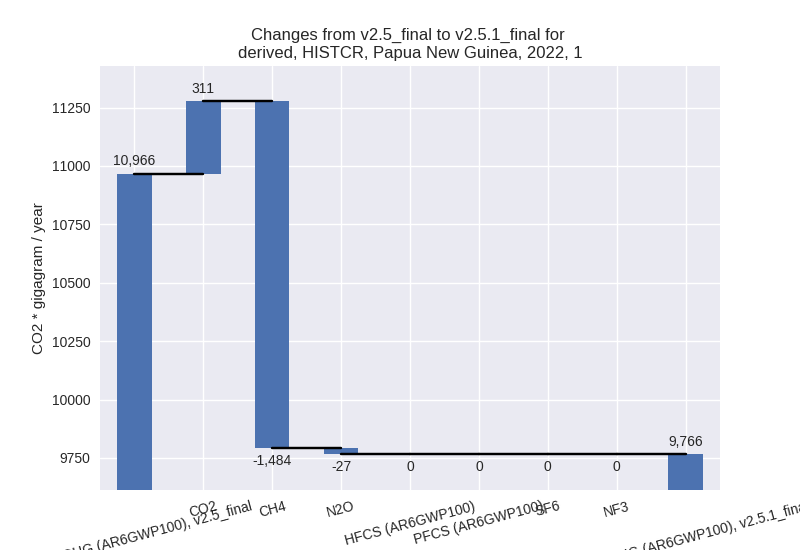
The changes come from the following subsectors:- 1.A: Total sectoral emissions in 2022 are 8542.23
Gg CO2 / year which is 87.5% of category 1 emissions. 2022 Emissions
have changed by 2.9% (241.05 Gg CO2
/ year). 1990-2022 Emissions have changed by 1.1% (57.46 Gg CO2 / year). For 2022 the
changes per gas
are:
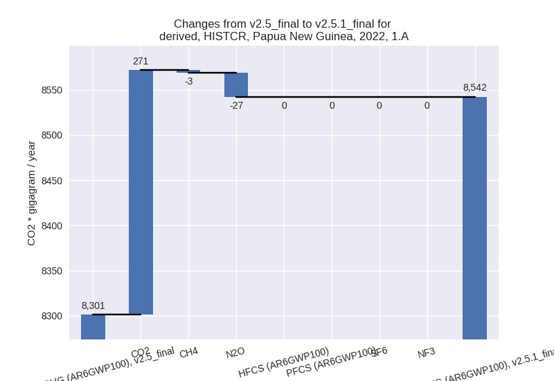
There is no subsector information available in PRIMAP-hist. - 1.B.2: Total sectoral emissions in 2022 are 1223.93
Gg CO2 / year which is 12.5% of category 1 emissions. 2022 Emissions
have changed by -54.1% (-1440.65 Gg
CO2 / year). 1990-2022 Emissions have changed by -7.8% (-169.72 Gg CO2 / year). For 2022
the changes per gas
are:
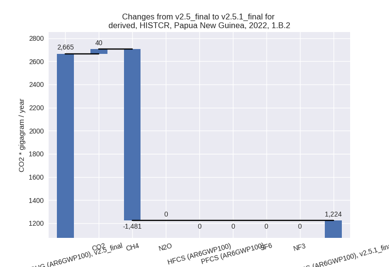
For 1990-2022 the changes per gas are:
There is no subsector information available in PRIMAP-hist.
- 1.A: Total sectoral emissions in 2022 are 8542.23
Gg CO2 / year which is 87.5% of category 1 emissions. 2022 Emissions
have changed by 2.9% (241.05 Gg CO2
/ year). 1990-2022 Emissions have changed by 1.1% (57.46 Gg CO2 / year). For 2022 the
changes per gas
are:
- 2: Total sectoral emissions in 2022 are 23.51 Gg
CO2 / year which is 0.2% of M.0.EL emissions. 2022 Emissions have
changed by -62.3% (-38.83 Gg CO2 /
year). 1990-2022 Emissions have changed by -57.8% (-30.62 Gg CO2 / year). For 2022
the changes per gas
are:
For 1990-2022 the changes per gas are:
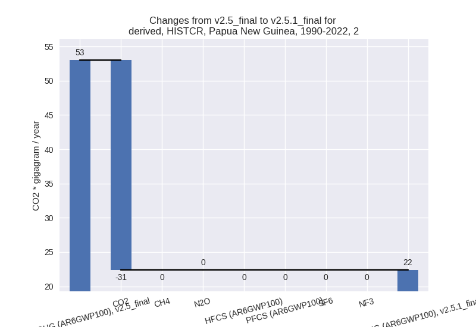 - M.AG: Total sectoral emissions in 2022 are 1034.55
Gg CO2 / year which is 8.5% of M.0.EL emissions. 2022 Emissions have
changed by -6.3% (-69.62 Gg CO2 /
year). 1990-2022 Emissions have changed by 0.3% (2.81 Gg CO2 / year). For 2022 the
changes per gas
are:
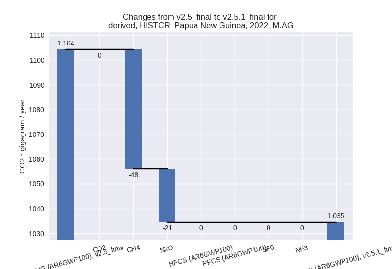
The changes come from the following subsectors:- 3.A: Total sectoral emissions in 2022 are 456.99 Gg
CO2 / year which is 44.2% of category M.AG emissions. 2022 Emissions
have changed by -2.4% (-11.39 Gg CO2
/ year). 1990-2022 Emissions have changed by -0.1% (-0.48 Gg CO2 / year). For 2022 the
changes per gas
are:
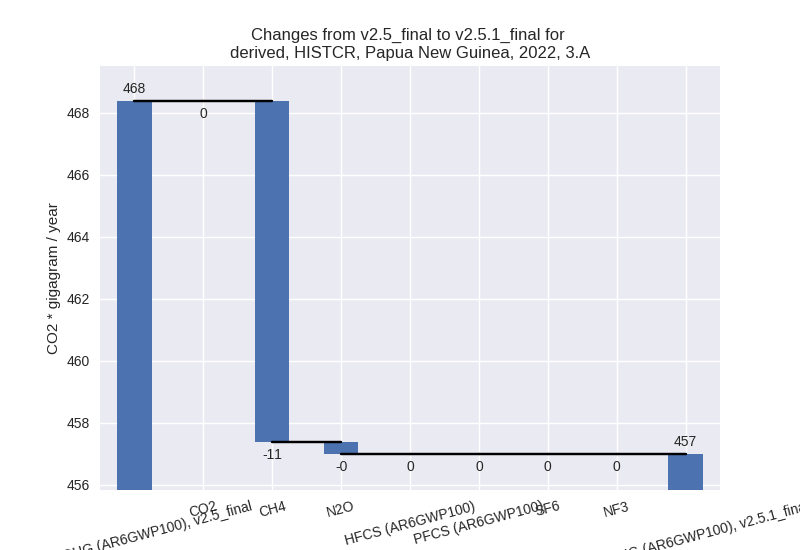
There is no subsector information available in PRIMAP-hist. - M.AG.ELV: Total sectoral emissions in 2022 are
577.56 Gg CO2 / year which is 55.8% of category M.AG emissions. 2022
Emissions have changed by -9.2%
(-58.23 Gg CO2 / year). 1990-2022 Emissions have changed by 0.6% (3.28 Gg CO2 / year). For 2022 the
changes per gas
are:
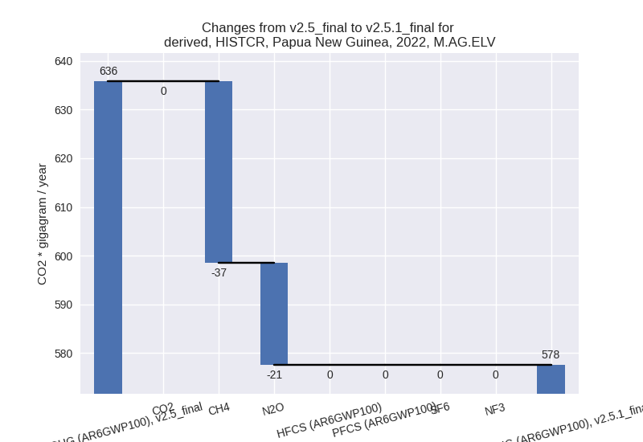
There is no subsector information available in PRIMAP-hist.
- 3.A: Total sectoral emissions in 2022 are 456.99 Gg
CO2 / year which is 44.2% of category M.AG emissions. 2022 Emissions
have changed by -2.4% (-11.39 Gg CO2
/ year). 1990-2022 Emissions have changed by -0.1% (-0.48 Gg CO2 / year). For 2022 the
changes per gas
are:
- 4: Total sectoral emissions in 2022 are 1249.84 Gg CO2 / year which is 10.3% of M.0.EL emissions. 2022 Emissions have changed by -0.0% (-0.12 Gg CO2 / year). 1990-2022 Emissions have changed by -0.0% (-0.00 Gg CO2 / year).
- 5: Total sectoral emissions in 2022 are 87.78 Gg
CO2 / year which is 0.7% of M.0.EL emissions. 2022 Emissions have
changed by 2.2% (1.85 Gg CO2 /
year). 1990-2022 Emissions have changed by 0.1% (0.06 Gg CO2 / year). For 2022 the
changes per gas
are:

third party scenario (HISTTP):
Most important changes per time frame
For 2022 the following sector-gas combinations have the highest absolute impact on national total KyotoGHG (AR6GWP100) emissions in 2022 (top 5):
- 1: 1.B.2, CH4 with -2141.44 Gg CO2 / year (-59.9%)
- 2: M.AG.ELV, N2O with -1858.05 Gg CO2 / year (-57.2%)
- 3: 1.A, CO2 with 275.14 Gg CO2 / year (3.6%)
- 4: 1.B.2, CO2 with 138.08 Gg CO2 / year (411.9%)
- 5: 1.A, CH4 with 50.75 Gg CO2 / year (11.9%)
For 1990-2022 the following sector-gas combinations have the highest absolute impact on national total KyotoGHG (AR6GWP100) emissions in 1990-2022 (top 5):
- 1: M.AG.ELV, N2O with -1781.09 Gg CO2 / year (-58.0%)
- 2: 1.B.2, CH4 with -245.82 Gg CO2 / year (-18.4%)
- 3: 1.A, CO2 with 72.47 Gg CO2 / year (1.6%)
- 4: 2, CO2 with -30.62 Gg CO2 / year (-57.8%)
- 5: 1.A, CH4 with 15.67 Gg CO2 / year (4.0%)
Changes in the main sectors for aggregate KyotoGHG (AR6GWP100) are
- 1: Total sectoral emissions in 2022 are 10028.29 Gg
CO2 / year which is 71.8% of M.0.EL emissions. 2022 Emissions have
changed by -14.4% (-1685.52 Gg CO2 /
year). 1990-2022 Emissions have changed by -2.4% (-153.63 Gg CO2 / year). For 2022
the changes per gas
are:
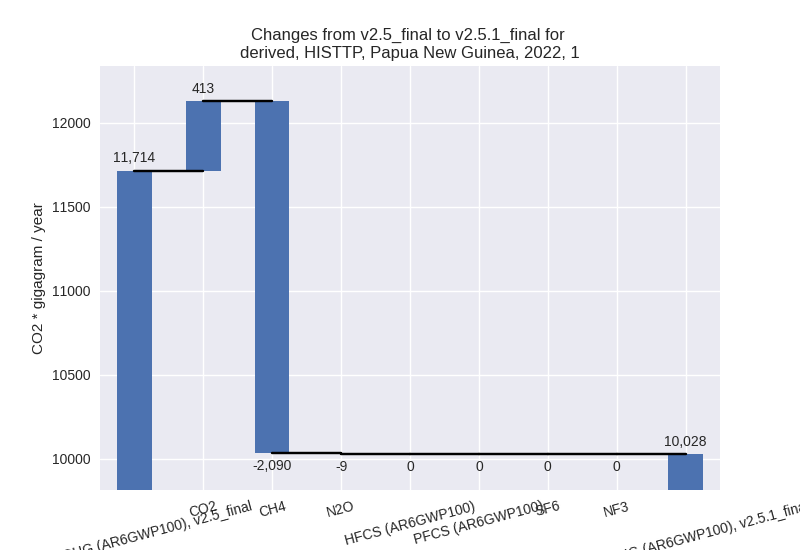
For 1990-2022 the changes per gas are:
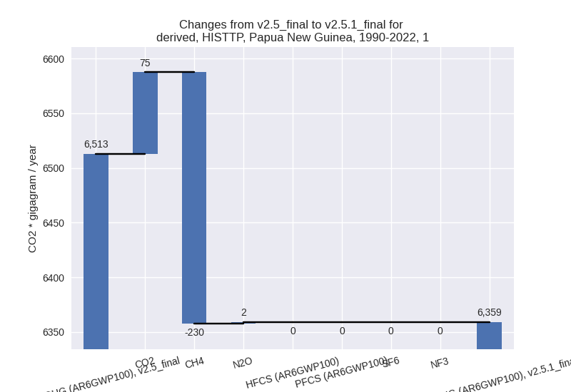
The changes come from the following subsectors:- 1.A: Total sectoral emissions in 2022 are 8410.42
Gg CO2 / year which is 83.9% of category 1 emissions. 2022 Emissions
have changed by 3.9% (316.86 Gg CO2
/ year). 1990-2022 Emissions have changed by 1.8% (89.84 Gg CO2 / year). For 2022 the
changes per gas
are:
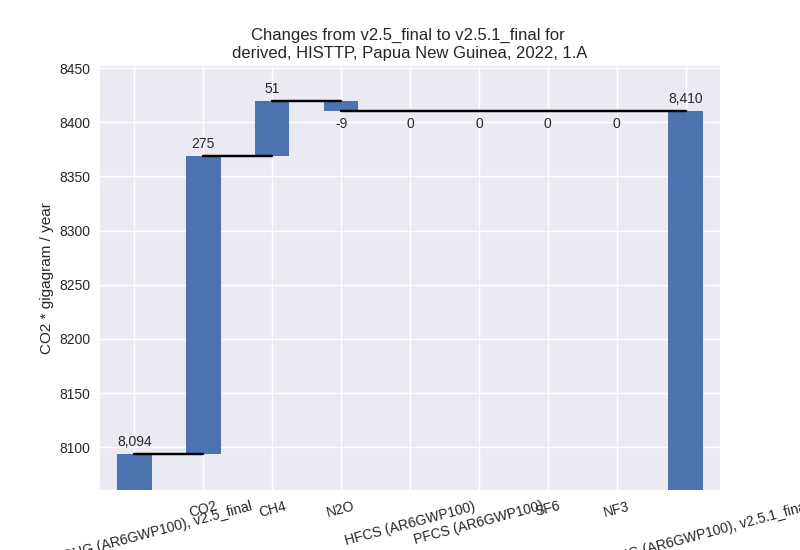
There is no subsector information available in PRIMAP-hist. - 1.B.1: Total sectoral emissions in 2022 are 13.92
Gg CO2 / year which is 0.1% of category 1 emissions. 2022 Emissions have
changed by 3.5% (0.47 Gg CO2 /
year). 1990-2022 Emissions have changed by 1.4% (0.14 Gg CO2 / year). For 2022 the
changes per gas
are:
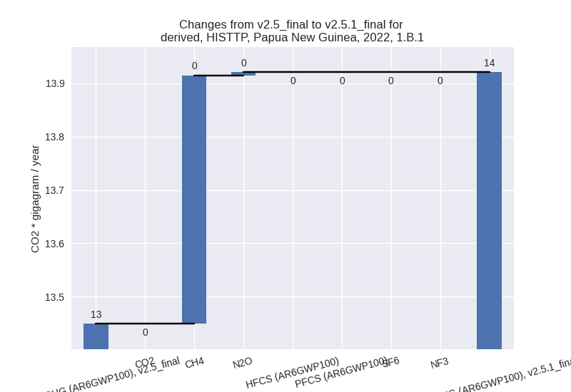
There is no subsector information available in PRIMAP-hist. - 1.B.2: Total sectoral emissions in 2022 are 1603.95
Gg CO2 / year which is 16.0% of category 1 emissions. 2022 Emissions
have changed by -55.5% (-2002.86 Gg
CO2 / year). 1990-2022 Emissions have changed by -15.8% (-243.60 Gg CO2 / year). For 2022
the changes per gas
are:
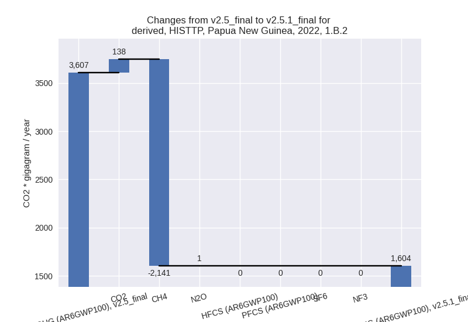
For 1990-2022 the changes per gas are:
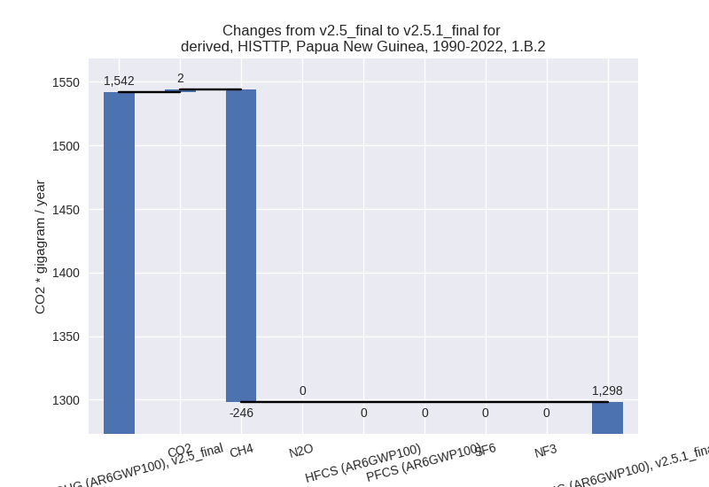
There is no subsector information available in PRIMAP-hist.
- 1.A: Total sectoral emissions in 2022 are 8410.42
Gg CO2 / year which is 83.9% of category 1 emissions. 2022 Emissions
have changed by 3.9% (316.86 Gg CO2
/ year). 1990-2022 Emissions have changed by 1.8% (89.84 Gg CO2 / year). For 2022 the
changes per gas
are:
- 2: Total sectoral emissions in 2022 are 23.51 Gg
CO2 / year which is 0.2% of M.0.EL emissions. 2022 Emissions have
changed by -62.3% (-38.83 Gg CO2 /
year). 1990-2022 Emissions have changed by -57.8% (-30.62 Gg CO2 / year). For 2022
the changes per gas
are:
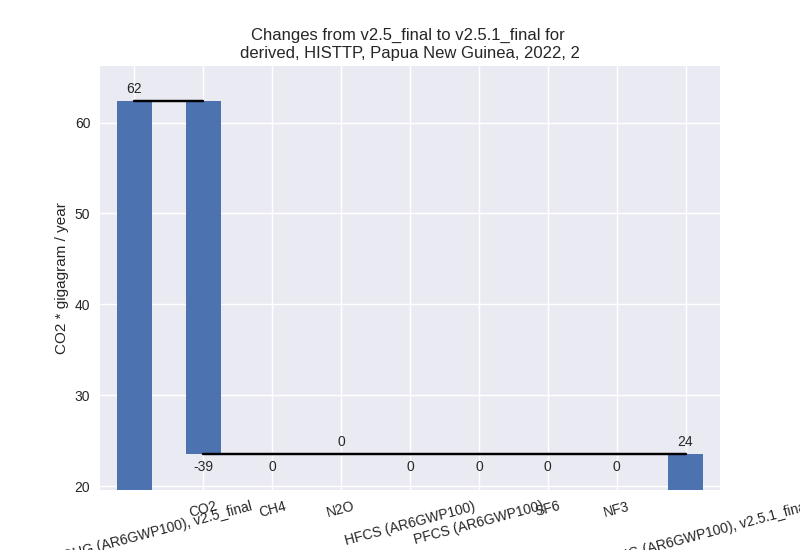
For 1990-2022 the changes per gas are: - M.AG: Total sectoral emissions in 2022 are 2573.79
Gg CO2 / year which is 18.4% of M.0.EL emissions. 2022 Emissions have
changed by -42.5% (-1901.36 Gg CO2 /
year). 1990-2022 Emissions have changed by -43.4% (-1783.84 Gg CO2 / year). For 2022
the changes per gas
are:
For 1990-2022 the changes per gas are:
The changes come from the following subsectors:- 3.A: Total sectoral emissions in 2022 are 1142.98 Gg CO2 / year which is 44.4% of category M.AG emissions. 2022 Emissions have changed by -0.5% (-6.13 Gg CO2 / year). 1990-2022 Emissions have changed by -0.1% (-0.73 Gg CO2 / year).
- M.AG.ELV: Total sectoral emissions in 2022 are
1430.81 Gg CO2 / year which is 55.6% of category M.AG emissions. 2022
Emissions have changed by -57.0%
(-1895.23 Gg CO2 / year). 1990-2022 Emissions have changed by -56.6% (-1783.11 Gg CO2 / year). For 2022
the changes per gas
are:
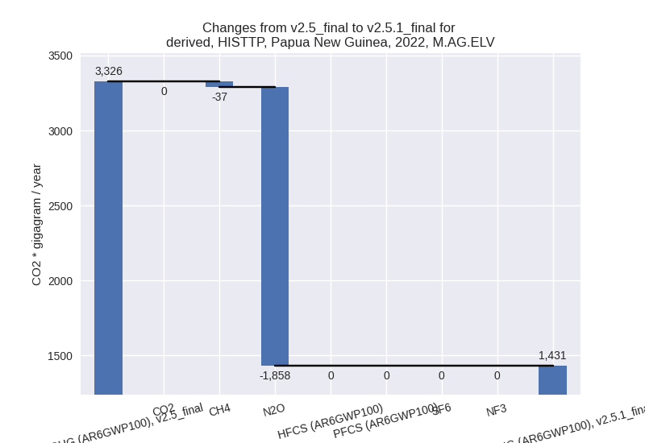
For 1990-2022 the changes per gas are:
There is no subsector information available in PRIMAP-hist.
- 4: Total sectoral emissions in 2022 are 1249.84 Gg CO2 / year which is 9.0% of M.0.EL emissions. 2022 Emissions have changed by -0.0% (-0.12 Gg CO2 / year). 1990-2022 Emissions have changed by -0.0% (-0.00 Gg CO2 / year).
- 5: Total sectoral emissions in 2022 are 87.78 Gg
CO2 / year which is 0.6% of M.0.EL emissions. 2022 Emissions have
changed by 2.2% (1.85 Gg CO2 /
year). 1990-2022 Emissions have changed by 0.1% (0.06 Gg CO2 / year). For 2022 the
changes per gas
are:
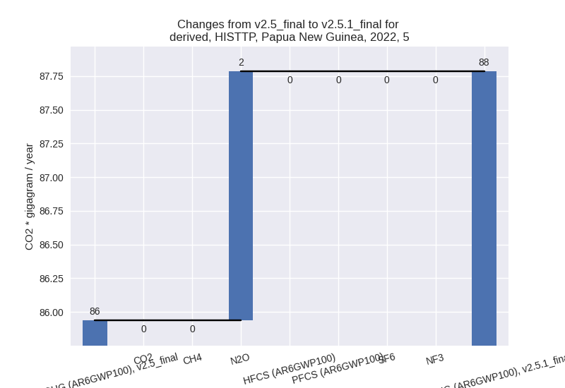